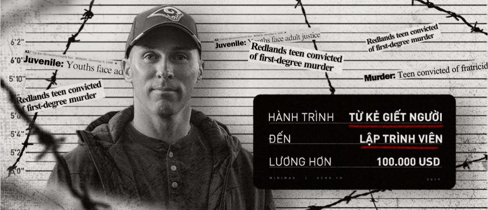
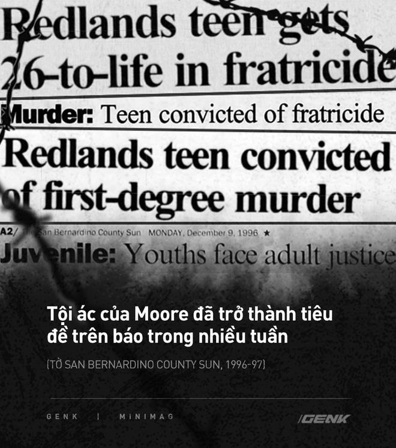
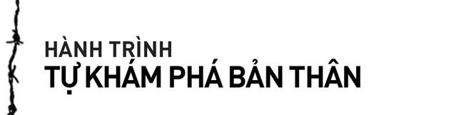
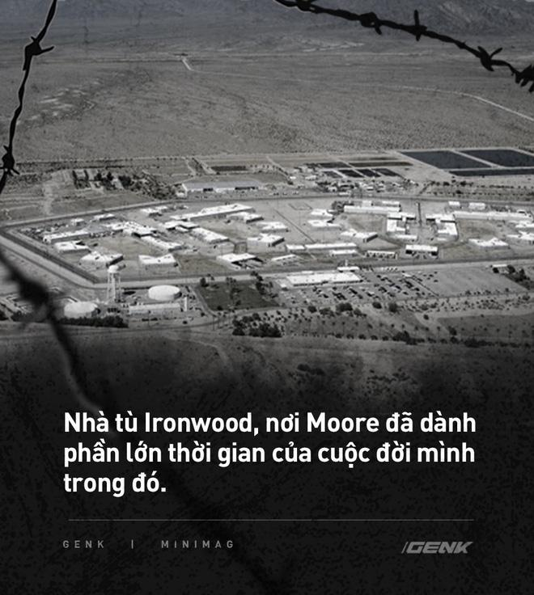
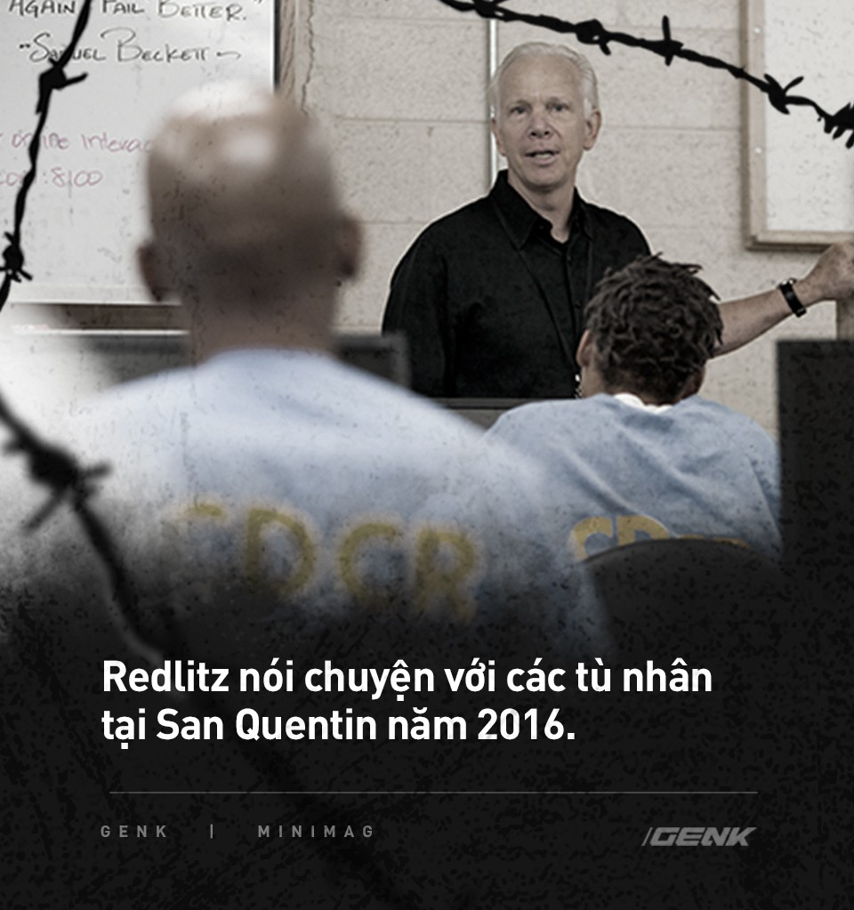
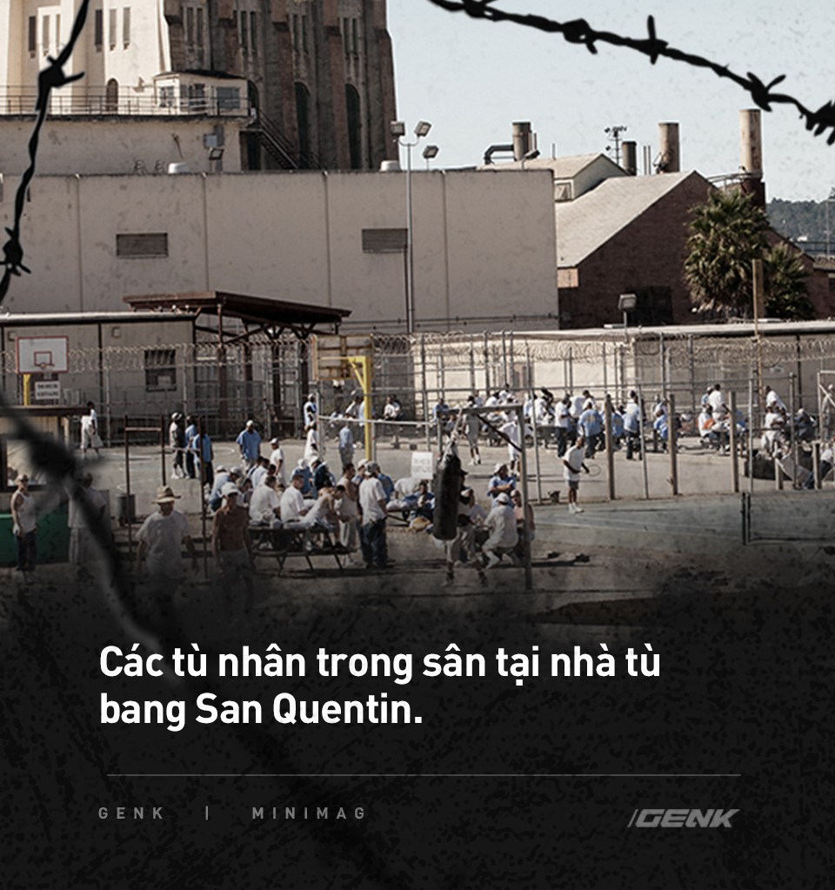
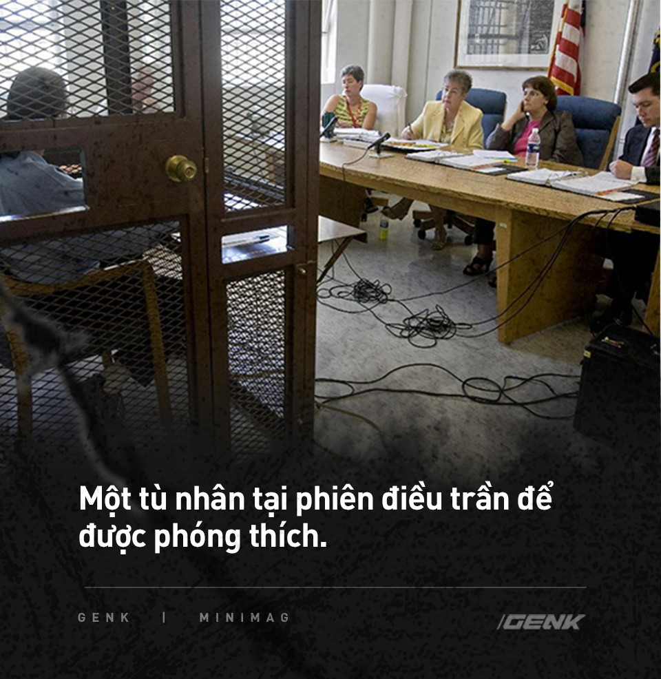
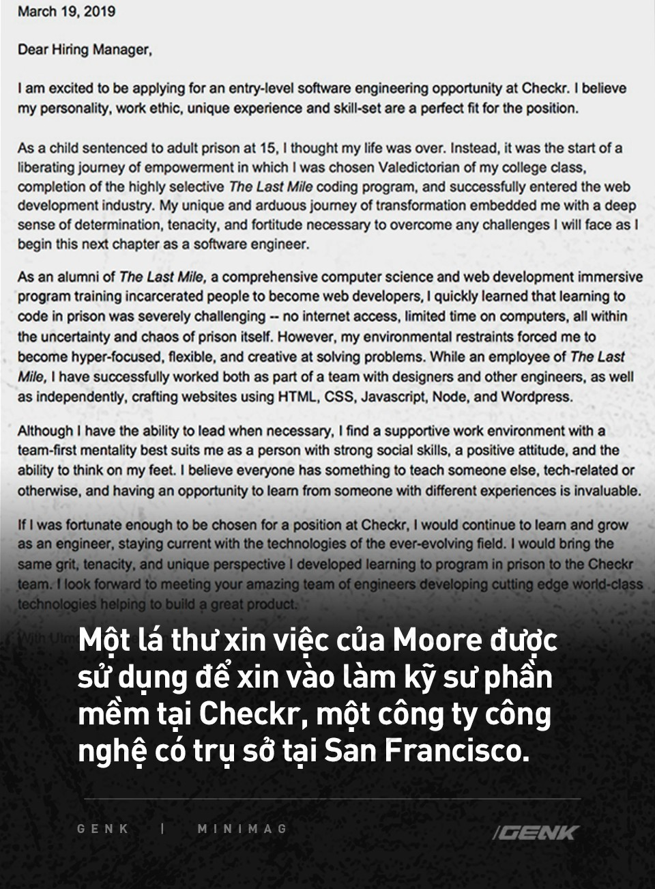
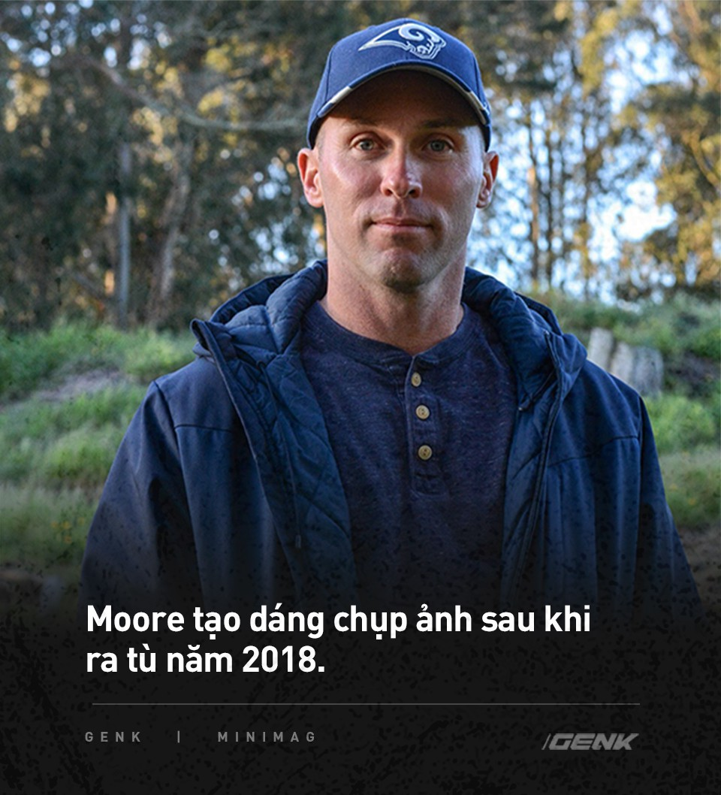

Những dòng code đã đưa kẻ sát nhân lĩnh án chung thân trở thành kỹ sư lương 100 nghìn đô tại thung lũng Silicon như thế nào?
Năm 1996, Zachary Moore phạm tội giết người. Hôm nay, anh đã là kỹ sư máy tính tại một công ty công nghệ ở Thung lũng Silicon. Câu chuyện dưới đây là cách đã giúp cho người đàn ông này thay đổi cuộc đời mình.

Trong suốt 22 năm, Zachary Moore đã phải ngồi trong căn phòng giam 1,8 x 2,7 mét. Nhưng nay, anh ngồi trong một văn phòng có không gian mở ở San Francisco, để khảo sát và kiểm tra các dòng code.
Năm 15 tuổi, người đàn ông này bị kết án chung thân vì tội giết người. Năm nay 38 tuổi, anh có một công việc toàn thời gian là kỹ sư phần mềm, làm việc cùng với các đồng nghiệp từng tốt nghiệp ở đại học Stanford. Với mức lương sáu con số, anh có mức lương cao thuộc nhóm cao nhất trong số những người lao động tại Mỹ.
Câu chuyện của Moore là một trong những minh chứng rõ ràng nhất cho sự kiên trì, chăm chỉ và tinh thần chuộc lỗi. Bản thân nó cũng đặt ra một câu hỏi gây tranh cãi: Liệu một kẻ giết người bị kết án có nên được nhận cơ hội thứ hai?
Moore lớn lên ở tầng lớp trung lưu, trong một khu phố yên tĩnh ở Redlands, bang California.
Tuổi thơ anh giống như mọi đứa trẻ khác sống ở khu vực ngoại ô, với trò chơi điện tử, các môn thể thao, đi chơi với bạn bè. Nhưng ở nhà, mọi thứ vô cùng rối loạn.
Cha mẹ Moore đều nghiện rượu, thường xuyên say mèm và bỏ mặc con cái, đôi khi quên cho chúng ăn. Khi bước vào tuổi thiếu niên, anh gặp khó khăn trong việc kiểm soát cảm xúc và tự tìm cách chữa bệnh cho mình bằng rượu và ma túy. Nhưng nó chỉ làm cho mọi cảm xúc trở nên cực đoan hơn và mọi thứ trở nên phức tạp lên gấp nhiều lần.
Vào đêm ngày 8/11/1996, một cuộc cãi vã với các thành viên trong gia đình đã nổ ra. Giận dữ, ghen tuông và đau đớn xâm chiếm toàn bộ tâm trí của anh. 11h30 tối, Moore nhặt một con dao, đến gần chiếc ghế dài nơi em trai mình đang ngủ và đâm chết người em ruột thịt của mình.

Tại phiên tòa, luật sư bào chữa của Moore đã đổ lỗi cho một môi trường sống đầy rẫy những vụ sử dụng ma túy, nghiện rượu và bạo hành, lạm dụng. Chúng được lấy làm lý do khiến tâm lý của anh trở nên vặn vẹo, cuối cùng tích tụ thành phản ứng tiêu cực. Nhưng bồi thẩm đoàn đã không có bất kỳ sự thương hại nào khi ra quyết định cuối cùng, do tính chất của hành vi phạm tội. Vào tháng 9/1997, Zachary Moore bị kết tội giết người và theo luật của bang California khi đó, anh nhận mức án chung thân không xác định với thời gian không phóng thích trước 26 năm.
Ba ngày trước sinh nhật thứ 17 của mình, Moore đã được chuyển từ trại giam vị thành niên đến một nhà tù an ninh cao.

Trong vài năm tiếp theo, Moore vật lộn với cuộc sống trong tù, cố gắng tìm hiểu mình là ai và những gì mình đã làm.
"Nhà tù giống như trường trung học - đó là một nhóm những người đàn ông 30, 40, 50 tuổi, bị mắc kẹt trong đó từ khi còn là thanh thiếu niên",anh nói."Mọi người sẽ đeo những chiếc mặt nạ này, cảm thấy nó phù hợp với mình và cảm thấy được chấp nhận. Không ai muốn đối mặt với chính bản thân họ".
họ". Moore thường xuyên gặp rắc rối và vào năm 2000, anh được chuyển đến phòng biệt giam, nơi sẽ bị còng 23 tiếng một ngày và gần như không có sự tiếp xúc với con người. "Lần đầu tiên", anh nói."Tôi bắt đầu kéo xuống các lớp mặt nạ của mình".
Anh nhận ra tội ác của mình không phải là kết quả của những "cảm xúc cực đoan không lối thoát", hay việc hoàn cảnh mà mình lớn lên không phải là thứ đã giết chết em trai mình.

"Hàng triệu trẻ em trên thế giới lớn lên giống như tôi và đã tìm ra những cách khác để giải quyết mọi việc", anh nói. "Thực tế thì tôi là một sự khác biệt trong số đó. Có những điều về tôi mà chỉ có tự tôi mới có thể giải quyết và sửa chữa."
Moore sau đó sớm gia nhập một nhóm những người tù đang cố gắng cải thiện bản thân. Mặc dù thường xuyên bị bắt nạt và chế giễu bởi những kẻ khác, họ đã cùng nhau thành lập một nhóm để hỗ trợ nhau. Anh đã tham gia các nhóm tìm hiểu về Phật giáo, các lớp thiền và dần dần, với sự hỗ trợ về mặt cảm xúc của những người bạn tù, đã học được cách "loại bỏ những cảm xúc tiêu cực ra khỏi tâm trí".
Sau đó, Moore được chuyển tới nhà tù bang Ironwood, một cơ sở với mức an ninh trung bình. Tại đây, anh đã đăng ký vào một chương trình đại học trực tuyến tại Palo Verde College, kiếm được một bằng liên kết và tốt nghiệp với điểm trung bình 3,89.
Rồi một ngày nọ, anh nhìn thấy một tờ quảng cáo trên hành lang nhà tù nói về một chương trình có tên The Last Mile.
Vào năm 2010, Chris Redlitz, một doanh nhân kiêm nhà đầu tư tại Thung lũng Silicon đã được mời tới nói chuyện kinh doanh với các tù nhân tại Nhà tù bang San Quentin, phía bắc San Francisco.
"Tôi dự kiến sẽ đến đó và tìm thấy một nhóm người xấu", ông nói. "Nhưng tôi nhanh chóng nhận ra rằng nhiều người trong số họ là những doanh nhân lành nghề, những người không có con đường để học hỏi và thể hiện bản thân."
Cùng với vợ, Beverly, Redlitz đã thành lập The Last Mile (TLM) và bắt đầu cung cấp một chương trình về tinh thần khởi nghiệp, hai tuần một lần tại các nhà tù. Nhưng chẳng mấy chốc, cặp vợ chồng này đã nhận ra có một một vấn đề mang tính hệ thống lớn hơn cần được giải quyết.

Khi những người bị giam cầm trước đây được ra tù, họ được trao từ 10 đến 200 USD tiền mặt làm lộ phí. Những người này thường không có triển vọng về công việc hoặc nhà ở, cũng như rất ít có sự liên lạc với thế giới bên ngoài. Ở California, gần 7 trong số 10 tù nhân được thả ra đã tái phạm tội trong vòng 3 năm. Chu kỳ vĩnh viễn này đã góp phần vào một cuộc khủng hoảng giam giữ đang ngày càng gia tăng, đặt ra gánh nặng tài chính lên tới 182 tỷ USD mỗi năm ở Mỹ.
Do đó, Redlitz muốn trao quyền cho các tù nhân, dạy họ các kỹ năng để có thể dễ dàng sử dụng chúng để tìm được việc làm khi ra tù. Và ở California, không có kỹ năng nào đáng tin cậy để kiếm việc làm hơn là biết lập trình.
Vì vậy, The Last Mile đã đưa ra một chương trình dạy code toàn diện tới các nhà tù tại San Quentin.
Với sự tài trợ từ nhiều cơ sở lớn, Redlitz đã chuyển đổi một nhà máy in tại chỗ thành một trung tâm công nghệ với đầy đủ trang thiết bị hiện đại. Để giải quyết chính sách cấm Internet nghiêm ngặt của các nhà tù, ông đã xây dựng một mạng Internet giả lập trên mạng.
Khi The Last Mile mở rộng chương trình mã hóa của mình sang nhà tù Ironwood vào tháng 6/2015, Moore là một trong những người đầu tiên được tham gia.
Vào thời điểm đó, Moore mới chỉ sử dụng máy tính 3 lần trong đời - tất cả đều trước năm 1996 - và anh chưa bao giờ biết cái gọi là mạng Internet. Năm anh bị tống giam, AOL và Geocities vẫn đang cai trị các trang web. Tuy nhiên, công việc lập trình đã hấp dẫn anh.
"Tôi không biết gì về công nghệ, nhưng tôi phải nắm lấy nó",anh chia sẻ."Tôi cảm thấy đó là cơ hội chỉ đến một lần trong đời."

Mặc dù mang trên mình bản án chung thân, Moore vẫn nuôi hy vọng rằng anh sẽ được thả ra vào một ngày nào đó. Và khi ấy, anh muốn mình đã có được sự chuẩn bị để có thể tìm được một công việc có ích.
Nhưng trước tiên, Moore phải vượt qua quá trình sàng lọc của The Last Mile.
Đầu tiên, tù nhân phải có một hồ sơ trong sạch, không có vi phạm nào trong vòng 2 năm trước khi nộp đơn (các tội phạm mạng bị gạch khỏi danh sách một cách tự động). Tù nhân cũng phải có một hồ sơ theo dõi sự cải thiện từ ban quản lý nhà tù. Tiếp đó là vượt qua được một bài kiểm tra logic để đánh giá tư duy tuyến tính và kỹ năng giải quyết vấn đề.
Vì chương trình tập trung vào việc hỗ trợ những người sắp ra tù nên phần lớn tù nhân tham gia chỉ còn ít hơn 3 năm trong bản án. Tuy nhiên, nó cũng dành 10% cơ hội cho những người như Moore, muốn có được một cơ hội thứ hai trong cuộc sống.
Moore đã vượt qua các thử thách, được chấp nhận và bắt đầu chương trình học code đầu tiên, với hai khóa học kéo dài 6 tháng.
Bốn lần một tuần, từ 7 giờ sáng đến 2 giờ chiều, anh tham gia một nhóm nhỏ để học về các ngôn ngữ lập trình cơ bản như HTML và CSS. Trong tháng đầu tiên, anh ta chỉ được phép viết mã bằng tay. Khi được tiếp xúc với máy tính, anh sẽ phải học dựa vào sự kết hợp của các video hướng dẫn. Những video này được thực hiện trong các studio ở San Francisco, bởi các chuyên gia kỹ thuật đến từ Google, Airbnb, Slack và Alibaba.
"Chúng tôi không có quyền truy cập Internet. Việc học thật là phiền phức vì tôi không biết thế giới tự do thực sự trông như thế nào. Nó buộc bạn phải làm mọi thứ trực quan và sáng tạo", anh nhớ lại.
Giai đoạn 6 tháng thứ hai tập trung vào mã hóa back-end, kết hợp Javascript và NodeJS. Đối với dự án cuối cùng của mình, mang tên Capstone, Moore đã xây dựng một trang web thương mại điện tử giả lập. Đó là một thị trường với những thứ liên quan đến mọt sách mà anh gọi là GeekChic
Moore tốt nghiệp trong nhóm có điểm số cao nhất và sớm nhận ra rằng The Last Mile cũng cung cấp lớp đào tạo bổ sung tại nhà tù San Quentin, tập trung vào các thuật toán tiên tiến và khoa học dữ liệu. Anh ấy đã xin chuyển nhà tù để theo học và được chấp thuận.
Không lâu sau khi đến đây, Moore nhận được một tin vui bất ngờ: Anh có cơ hội được phóng thích.
Ở California, luật pháp xung quanh các tội ác bạo lực do thanh thiếu niên gây ra đã được xem xét lại.
Một dự luật của tiểu bang, được thông qua vào năm 2014, đã ra lệnh rằng thanh thiếu niên (dưới 18 tuổi khi phạm tội) đã bị xét xử khi trưởng thành được quyền phóng thích, sau khi tham dự các phiên điều trần để xác định đủ điều kiện được trả tự do sớm. Tiếp theo đó là một dự luật khác, cấm hoàn toàn việc các tòa án xét xử bất cứ ai dưới 16 tuổi như xét xử một người trưởng thành.
Năm 2018, Moore đã được xét xử trước hội đồng xét duyệt phóng thích.
Anh biết đây là cơ hội để mình trở lại là một con người. Và việc cần làm bây giờ là phải thuyết phục 12 người sẽ đưa ra phán quyết, những người được bổ nhiệm bởi thống đốc bang California.
"Tôi đã đưa họ đi lại hành trình cuộc đời mình, từ khi 3 tuổi đến năm 37 tuổi", anh nói. "Tôi đã tự phơi bày mình ra để họ mổ xẻ, phân tích từ suy nghĩ cho tới cảm xúc."
Quyết định phóng thích của Moore được xác nhận. Nhưng hội đồng vẫn còn 150 ngày để lật ngược quyết định. Trong 5 tháng đó, anh chỉ có thể ngồi đợi và biết rằng bất cứ lúc nào, tự do của mình cũng có thể bị lấy đi.
Trong suốt quãng thời gian này, Moore đã ném mình vào những dòng code, hoàn thành cấp bậc cuối cùng trong khóa học của mình. Thông qua một chương trình được cung cấp bởi The Last Mile, anh thậm chí còn giúp xây dựng các yếu tố của một trang web thực tế cho Dave's Killer Bread , một công ty bánh mì hữu cơ được thành lập bởi một người từng bị kết án.

Vào ngày 12/11/2018, sau 22 năm ở sau song sắt, Moore đã tự do.
Đại diện của The Last Mile đón anh bên ngoài nhà tù, đưa cho anh ta quần áo và máy tính xách tay, đưa anh về ở tại một trong những ngôi nhà chuyển tiếp, nơi dành cho những người tương tự như anh trước đây. Dần dần, Moore bắt đầu làm quen lại với xã hội.
Trong 6 tháng sau đó, anh làm việc bán thời gian với tư cách là kỹ sư cho The Last Mile. Khi đã cảm thấy sẵn sàng, anh bắt đầu nộp đơn xin thực tập kỹ thuật tại các công ty công nghệ ở Thung lũng Silicon.
"Tôi biết rằng không một công ty nào muốn thuê tôi", anh kể lại."Tôi chỉ muốn được tham gia một cuộc phỏng vấn."
Theo Jennifer Ellis, giám đốc điều hành của The Last Mile, các công ty công nghệ thường không muốn thuê người từng bị giam giữ vì hai lý do: vấn đề pháp lý và việc hội nhập văn hóa. "Cả hai đều dễ hiểu nhưng không chính đáng", cô nói.
Trên thực tế, luật pháp ở các bang tại Mỹ đang cố gắng để giúp người phạm tội hòa nhập cộng đồng, như xóa bỏ lịch sử phạm tội của họ trong đơn xin việc. Tuy nhiên, chúng chưa mang lại nhiều hiệu quả trong thực tế. Đặc biệt trong trường hợp của Moore là tội phạm bạo lực và có hành vi giết người, khiến anh nhận được sự kỳ thị nặng nề từ các nhà tuyển dụng.
Moore đã chấp nhận những sự kỳ thị này bằng cách nói thẳng về quá khứ của mình, điều mà The Last Mile khuyến khích. "Tôi đã viết câu chuyện của mình trong thư xin việc và sử dụng nó để giải thích những gì tôi đã học được về bản thân mình", anh nói.

Vào tháng 5/2019, Moore rời vị trí của mình ở The Last Mile để trở thành thực tập viên kỹ thuật tại Checkr, một công ty công nghệ được tờ New York Times khi đó gọi là "một trong những kỳ lân tiếp theo của Thung lũng Silicon".
Vào tháng 9 năm đó, công ty này đã thuê anh ta làm kỹ sư toàn thời gian, chức vụ đi kèm với mức lương 6 con số.
Checkr là một trong số các công ty công nghệ đang phát triển tại Thung lũng Silicon và là một trong những nơi hiếm hoi chấp nhận những người từng có tiền án tiền sự. 6% nhân viên của công ty là các tài năng từng có quá khứ là tội phạm.
"Việc bị kết án của một người không nên trở thành bản án chung thân của họ trong cuộc sống",người phát ngôn của Checkr nói. "Nếu ai đó có động lực để tạo ra sự thay đổi trong cuộc sống của họ, thì quá khứ của họ không nên định nghĩa tương lai của họ."

Vào một chiều thứ Bảy, Moore lên một chuyến tàu ở Oakland, nơi anh hiện đang sống và tiến về San Francisco để gặp một người vừa tốt nghiệp khác từ The Last Mile.
Cả hai có kế hoạch thực hiện việc "check-in" thường xuyên bằng cách gặp gỡ để nói về các vấn đề, khó khăn và cảm xúc, trước khi cùng xem bộ phim hài kinh dị Zombieland: Double Tap .

Kể từ khi thành lập, The Last Mile đã chuyển 70 sinh viên tốt nghiệp vào các nơi làm việc. Không một ai phải trở lại nhà tù, theo báo cáo của tổ chức này.
Đó được coi là một chiến thắng nhỏ nhưng quan trọng trong một hệ sinh thái lớn hơn của các nỗ lực chống tái phạm. Hiện The Last Mile đang xây dựng các chương trình mới, cung cấp thêm các khóa học lập trình tại 15 cơ sở giam giữ trải khắp 5 bang.
Theo một cách nào đó, Moore là một sinh viên tốt nghiệp điển hình. Giờ đây, anh là một người đàn ông da trắng thuộc tầng lớp trung lưu, có những đặc quyền của một người bình thường. Mặc dù Moore đã kết nối lại với cha mẹ mình, nhưng anh ta không cảm thấy đó là nơi phù hợp để cầu xin sự tha thứ. Anh cũng không bao giờ nghĩ rằng mình đã được tha thứ hoàn toàn.
"Tôi có một sự hối hận lạ thường rằng điều đó sẽ không bao giờ biến mất", anh nói. "Em trai tôi sẽ không bao giờ có được một cuộc sống mà đáng lẽ phải được nhận. Nó cũng sẽ không bao giờ ở đó vào dịp Giáng sinh, Lễ Tạ ơn hay sinh nhật."
Nhưng trong mắt của Chris Redlitz, người sáng lập The Last Mile, chính những khó khăn này đã khiến Moore trở thành một ứng cử viên đáng mơ ước trong một không gian công nghệ, nơi luôn coi trọng khả năng phục hồi.
"Tôi có một suy nghĩ rằng Thung lũng Silicon là nơi mà nếu bạn thất bại, hãy đứng dậy, phủi bụi và thử lại lần nữa", ông chia sẻ. "Và ai có thể chứng minh điều đó tốt hơn Zachary Moore?".